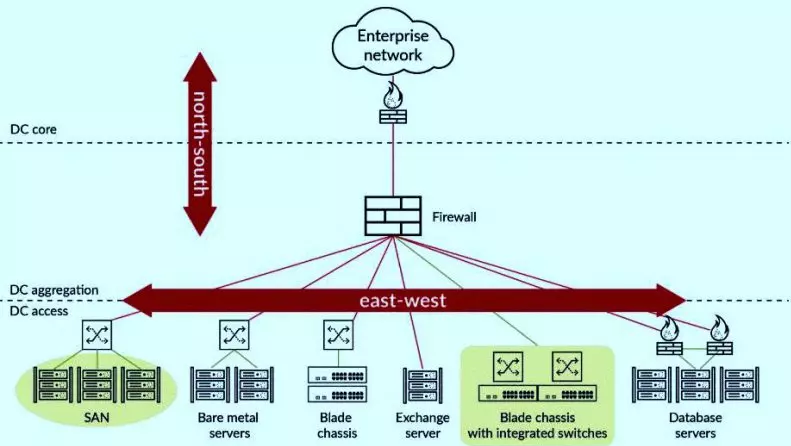
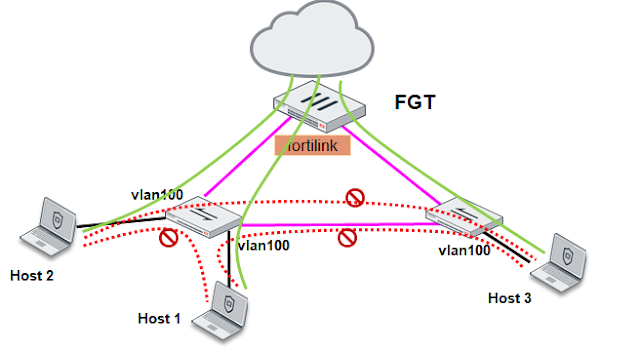
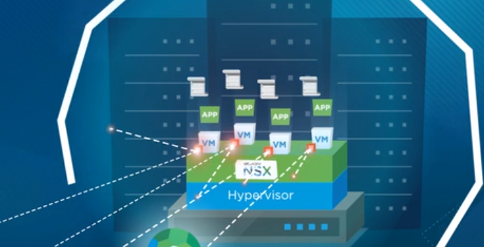

7. Microsegmentación
1. Introducción
La microsegmentación es una tecnología de seguridad que divide las redes físicas en cientos o miles de microsegmentos lógicos.
El objetivo es reducir los riesgos de ataques mejorando el rendimiento de la red y con una arquitectura más simple.
Con la microsegmentación se consigue:
- Reducir la superficie de ataque.
- Centralizar la gestión de las políticas de seguridad a nivel alto según las demandas de uso.
- Aislar el acceso y limitar el tráfico.
- Aplicar la seguridad a los microsegmentos que lo necesitan según sus necesidades y amenazas.
- Aprendizaje automático.
2. Caracterśticas
Tiene las siguientes características:
- Implementación rápida y sencilla.
- Flexibilidad ante los cambios.
- Razonablemente económica.
- Facilita el cumplimiento normativo.
- Reconoce:
- Sistemas Operativos antiguos y modernos.
- Servidores dedicados.
- Hipervisores.
- Cloud.
- Contenedores.
3. Tipos
Los tipos de microsegmentación son:
- Host - agent. Centrado en los usuarios finales y gestionado de manera centralizada.
- Basado en hipervisores. Para redes virtuales (SDN). Pueden utilizar firewalls ya implementados, además de migrar las actuales políticas de red a los mismos hipervisores u otros, dependiendo de cómo la actividad de la red va migrando a este modelo de gestión. No funciona del todo en entornos cloud.
- Basado en redes tradicionales. Segmentación basado en Listas de Control de Acceso y otros métodos. Extiende la segmentación tradicional creando segmentos más pequeños.
En la siguiente figura, se tiene un escenario CPD - Cloud.

4. Casos de uso
Los casos de uso de la microsegmentación son los siguientes:
- Entre clientes.
- Movilidad de dispositivos IoT.
- Protección datos sensibles (PCI DSS).
- Usuarios invitados.
- Separación usuarios y datos.
5. Análisis previo
Para implementar la microsegmentación hay que realizar una análisis previo para:
- Conocer la red.
- Estructura.
- Flujo de información.
- Patrones de comunicación (-|->, <-|-, |<-->|).
Por otra parte hay que detectar:
- Grupos de carga de trabajo dentro de una subred física.
- Servicios compartidos (DNS, DHCP...).
- Relaciones entre aplicaciones.
- Áreas vulnerables.
- Comportamientos ineficientes como el hairpinning (NAT loopback).
- Aplicaciones no apropiadas para la microsegmentación.
6. Ejemplos

Figura 2. Ejemplo de microsegmentación - Fuente.
Microsegmentación con NSX Data Center. Microsegmentación para aplicaciones en entornos de cloud privada y pública.

Figura 2. Ejemplo de microsegmentación - Fuente.
7. Referencias
- Redes Zero Trust: no confiar en nada ni nadie.
- https://ciberseguridad.com/guias/zero-trust/microsegmentacion/
- ¿Qué son las redes definidas por software? (SDN).
- Microsegmentación: redes más robustas y seguras ante ataques.
- Qué significa una estrategia de microsegmentación de red.
- Protección de datos sensibles, un enfoque holístico para el negocio.
- Guía completa sobre microsegmentación.
- Poner fin al movimiento lateral con la seguridad de red de confianza cero.
Obra publicada con Licencia Creative Commons Reconocimiento No comercial Compartir igual 4.0